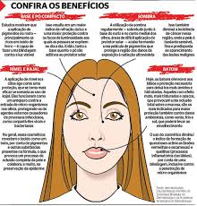

A maquiagem oferece benefícios como aumento da autoestima e autoconfiança, permitindo a autoexpressão da personalidade e a conexão com a própria identidade.
Além de realçar traços e disfarçar imperfeições, a maquiagem pode ser uma ferramenta de autocuidado e um ato de bem-estar. Com fórmulas que também oferecem benefícios de skincare, como proteção e hidratação, a maquiagem se torna ainda mais versátil.
- Eleva a autoestima:Ao realçar pontos fortes e suavizar imperfeições, a maquiagem pode promover uma sensação de melhora pessoal e aceitação de si mesmo.
- Eleva a autoestima:Ao realçar pontos fortes e suavizar imperfeições, a maquiagem pode promover uma sensação de melhora pessoal e aceitação de si mesmo.
- Promove a autoconfiança:Sentir-se mais seguro com a própria aparência pode ter um impacto positivo na forma como você se apresenta e interage com o mundo.
-
- Facilita a autoexpressão:A maquiagem é uma forma de arte que permite expressar criatividade, humor e a personalidade de cada um.
-
- Fomenta o bem-estar:O ato de se maquiar pode ser um momento de autocuidado, um ritual que ajuda a relaxar, focar em si mesmo e no autocuidado.
-
- Disfarça imperfeições:A maquiagem pode cobrir espinhas, manchas e outras características que a pessoa não gosta, proporcionando uma pele mais uniforme.
-
- Realça traços:Permite destacar pontos positivos do rosto, como os olhos ou os lábios, realçando a beleza natural.
